August 2017
The SLL says good-bye and thank you to our wonderful summer RAs.

July 2017
Sophie is featured on Michael Frank's Twitter page! Check out his awesome sketch of Sophie below:
Sophie Bridgers: 2-4 year-olds aren't just generally prosocial, they provide help that's specific to what went wrong #CogSci2017 pic.twitter.com/JZf65VvUdo
— Michael C. Frank (@mcxfrank) July 28, 2017
June 2017
Griffin Dietz has won the David M. Kennedy Prize for best Honors Thesis for her work entitled "Children's Use of Decomposition in Problem Solving as an Early Introduction to Computer Science"! Congratulations, Griffin!
Natalia and Sajjad scan their first participant for their new project.

May 2017
Our new paper (Gweon & Asaba, 2017) was featured in Stanford Report! Click here to read the news!
5/26: Happy Birthday, Natalia!

April 2017
4/13: The lab submitted four CogSci papers, and all were accepted as talks; congrats, everyone!
4/6-4/8: The lab travels to Austin to share their work at SRCD. Natalia presents her project.

March 2017
3/15: The SLL gathers for pizza and frisbee at the Oval.

3/17: Mika received NSF Graduate Fellowship! Congratulations!
February 2017
2/1: Another CogSci work party!

January 2017
1/12: Happy Birthday, Mika (Jan 9)!

November 2016
Natalia presents her first fMRI poster at SFN!
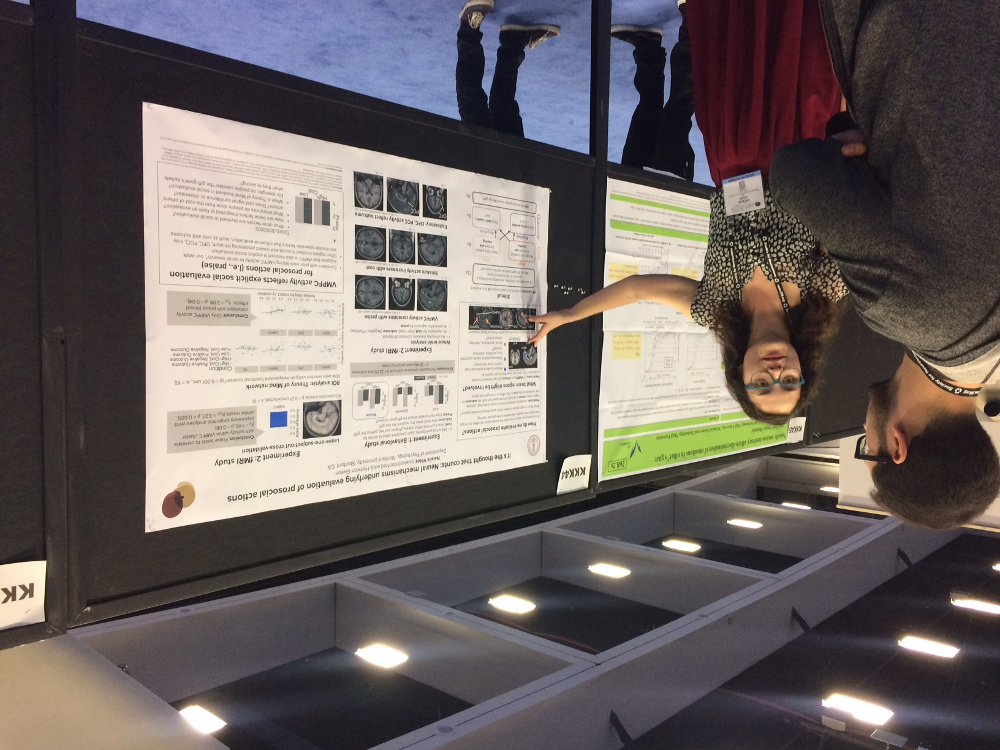September 2016
The lab wasn't quite ready to good-bye to Mika, our inaugural lab manager; instead, the lab welcomes her again, this time as a new grad student!
August 2016
The lab goes to CogSci!
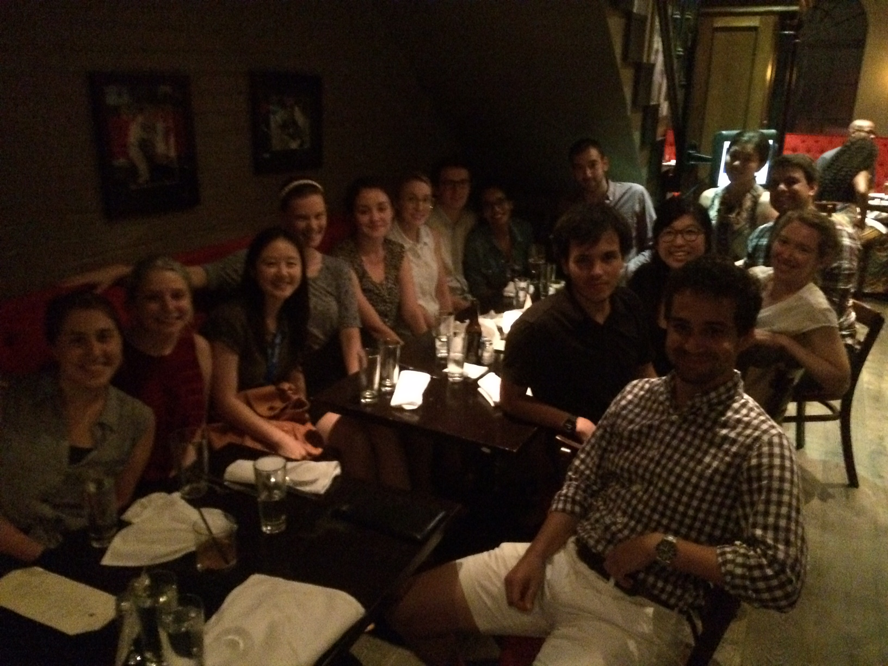June 2016
6/9: End-of-year picnic at the Oval
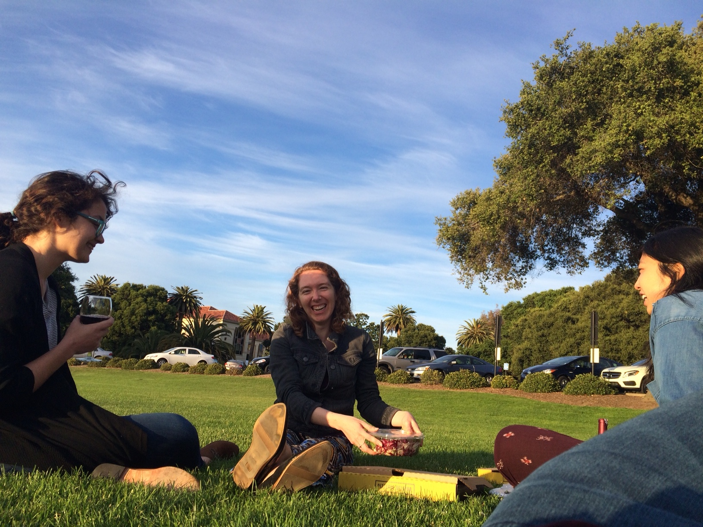 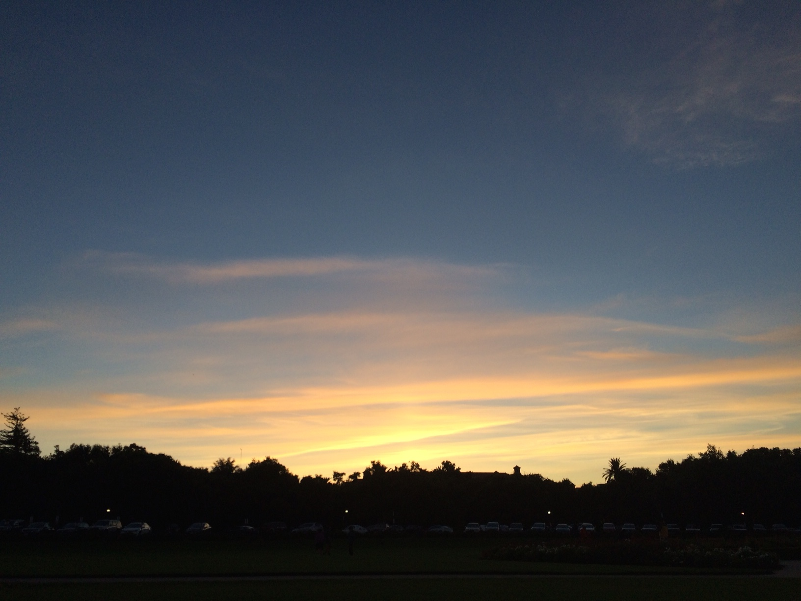6/1 - 6/5: The lab attends SPP!
May 2016
5/26: Happy Birthday, Natalia! "Can you choose a friend for me?"
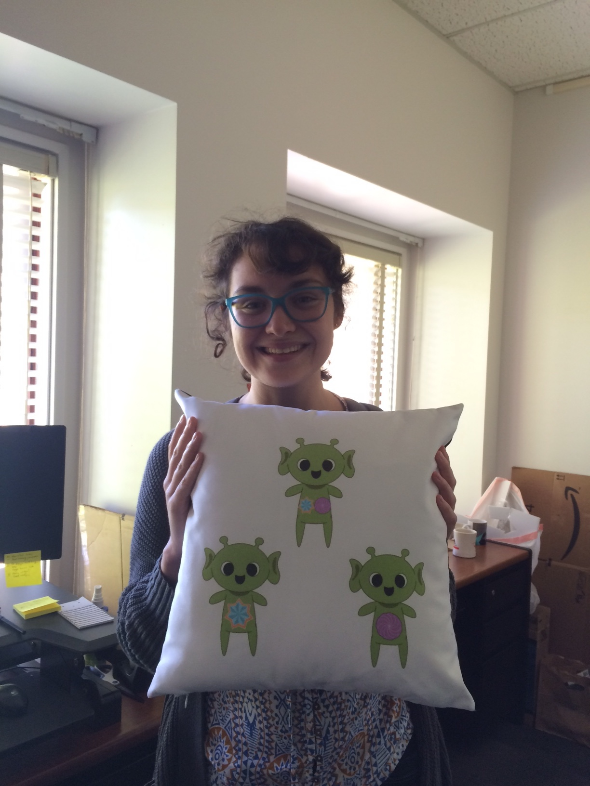
5/18: PSYCH187 field trip to the Bay Area Discovery Museum!
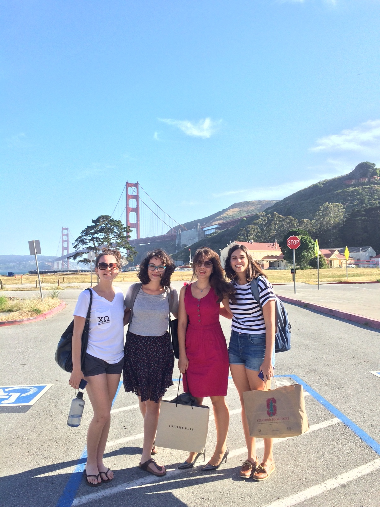March 2016
2/3: The lab says bye to our awesome research assistant, Sumudu!
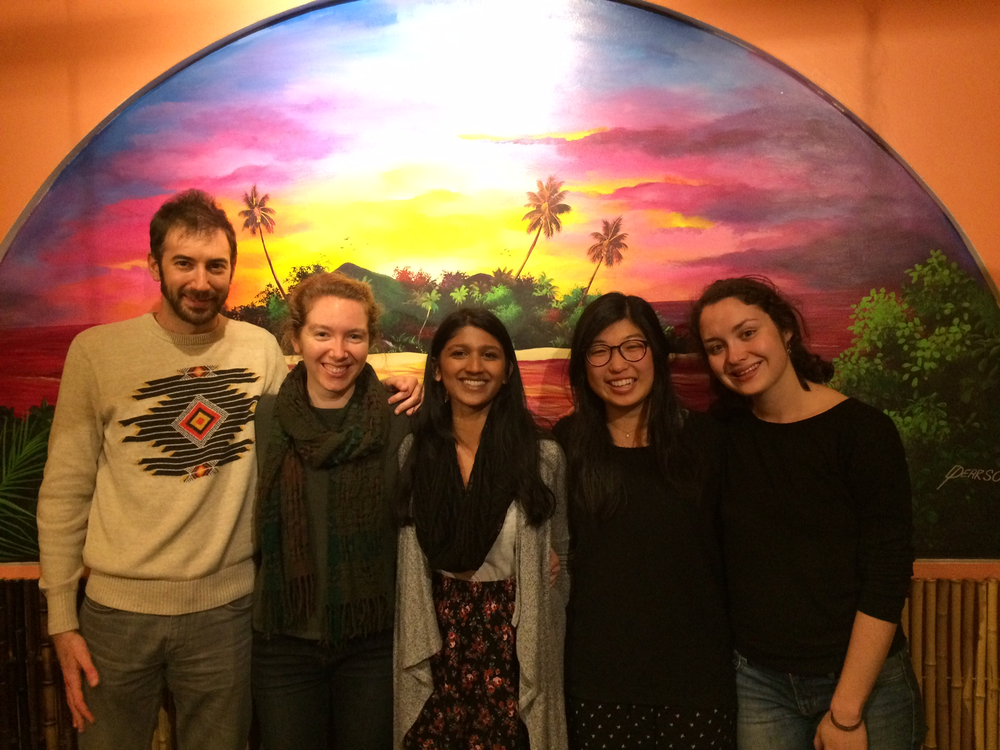February 2016
2/16: Happy Birthday, Sophie (Feb 15)!
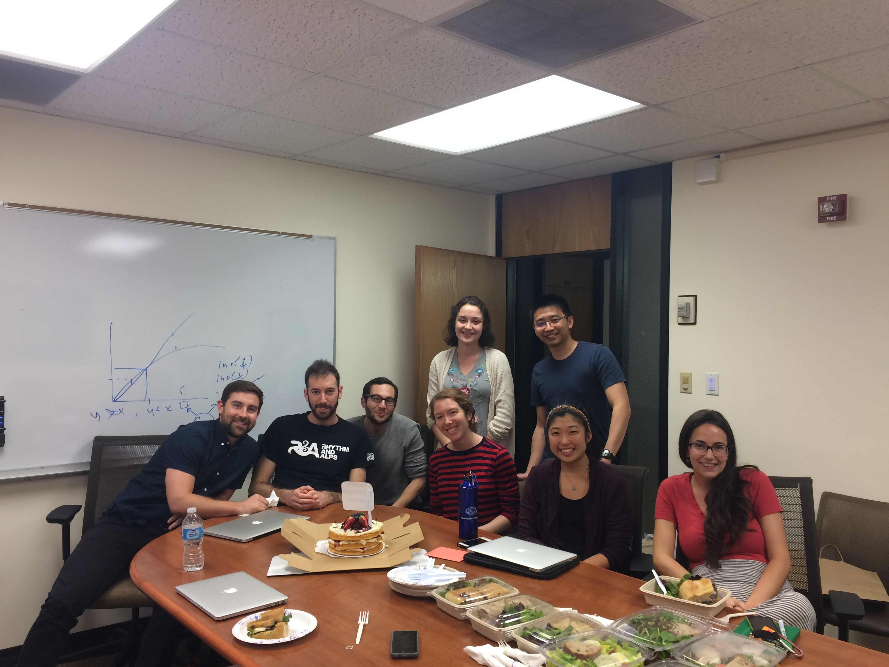2/3: The lab cheers to submitting CogSci papers this year!
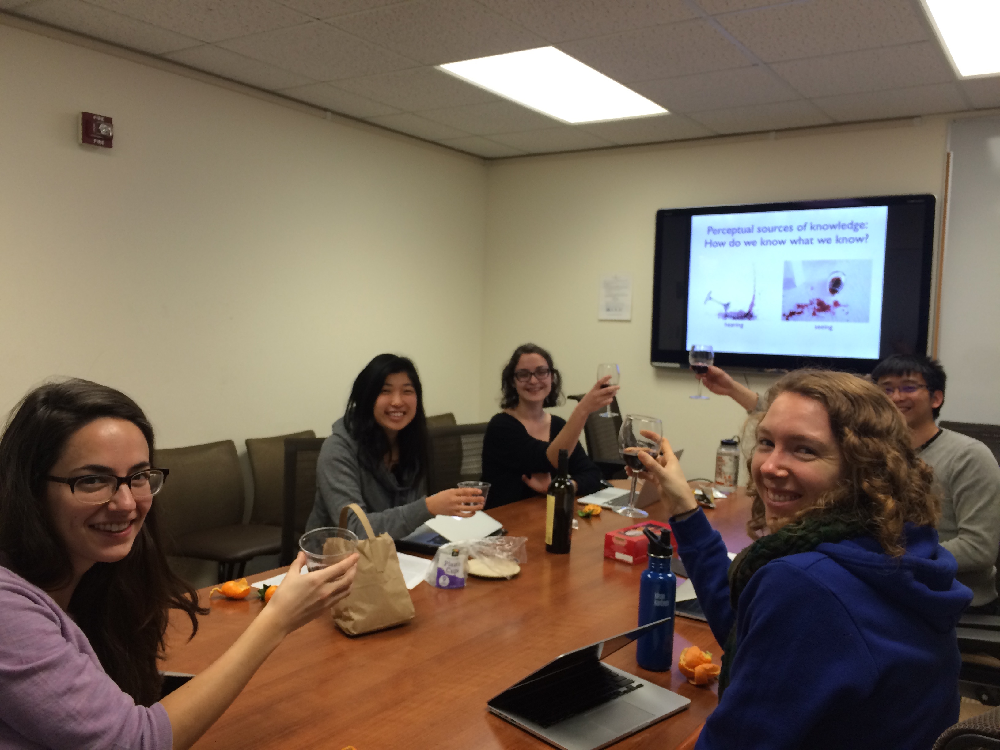December 2015
12/11: The lab celebrates the end of the quarter and says good-bye to 2015 with some pizza and good company!
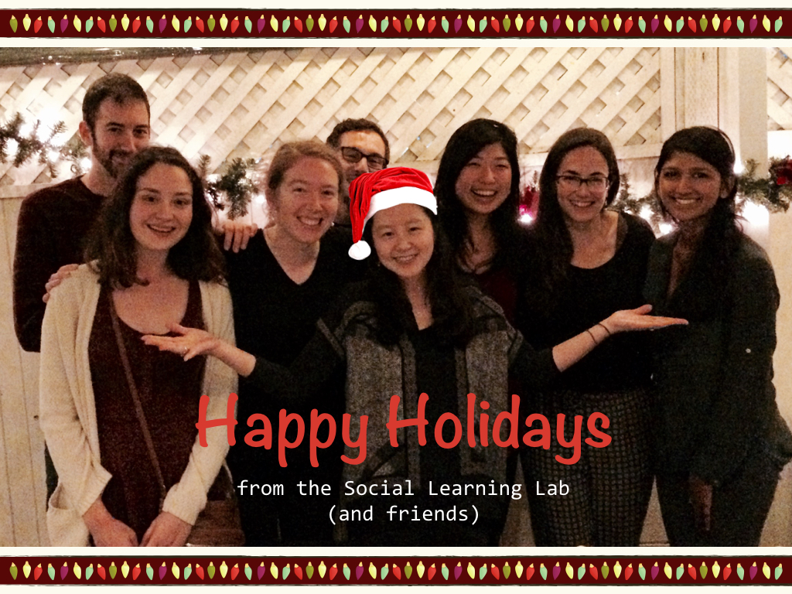August 2015
8/20: Summer interns present posters at the Psych Summer poster session.
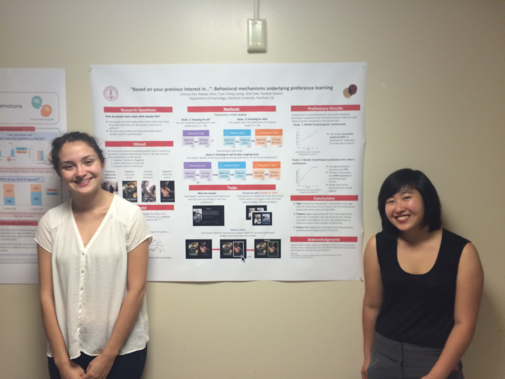July 2015
7/11: Death Cab for Cutie!
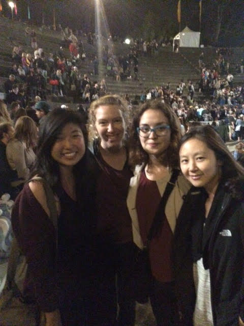June 2015
6/3: Undergraduate research assistants share their projects from the quarter!
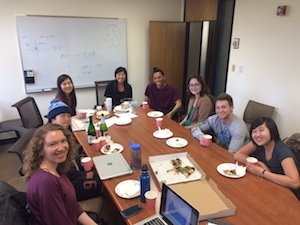April 2015
4/2: The lab participates in an epic bowling match in SF with the Zaki & Crum labs! We proudly took the third place... ;-)
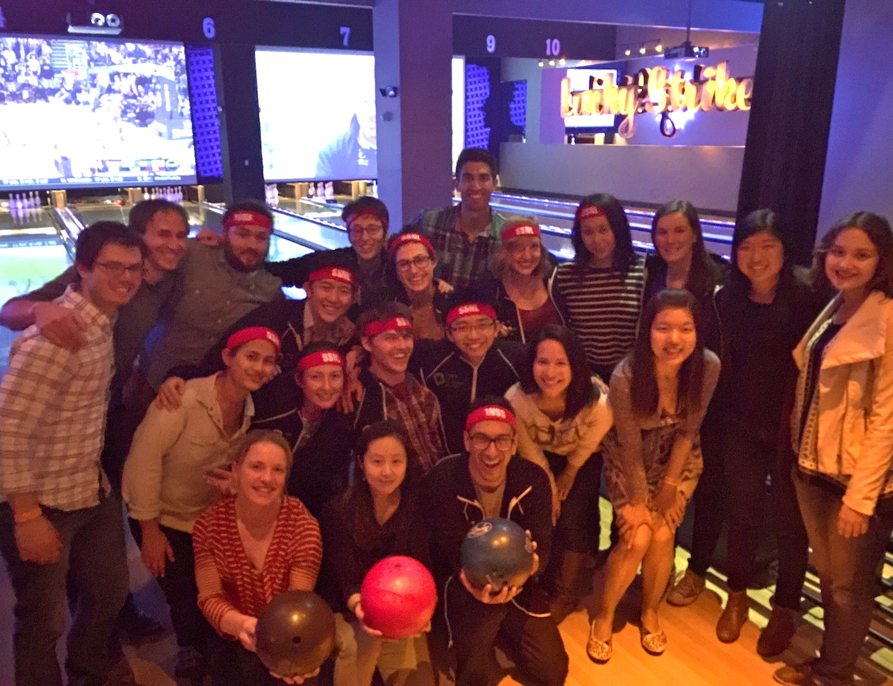4/1: Our graduate students, Natalia and Sophie, received NSF Graduate Fellowships! Congratulations!
March 2015
3/8: SLL goes on the first lab outing to Palo Alto Junior Museum and Zoo, to see and learn about owls!
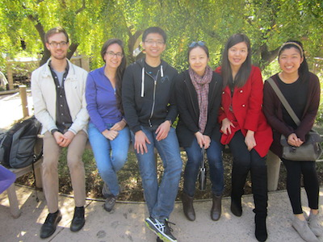3/5: The lab hosts our first (of many to come) work-party night!
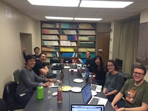February 2015
2/28: The lab celebrates its first night of scanning! Special thanks to Michael and Jesse from the Grill-Spector lab for their company and guidance.
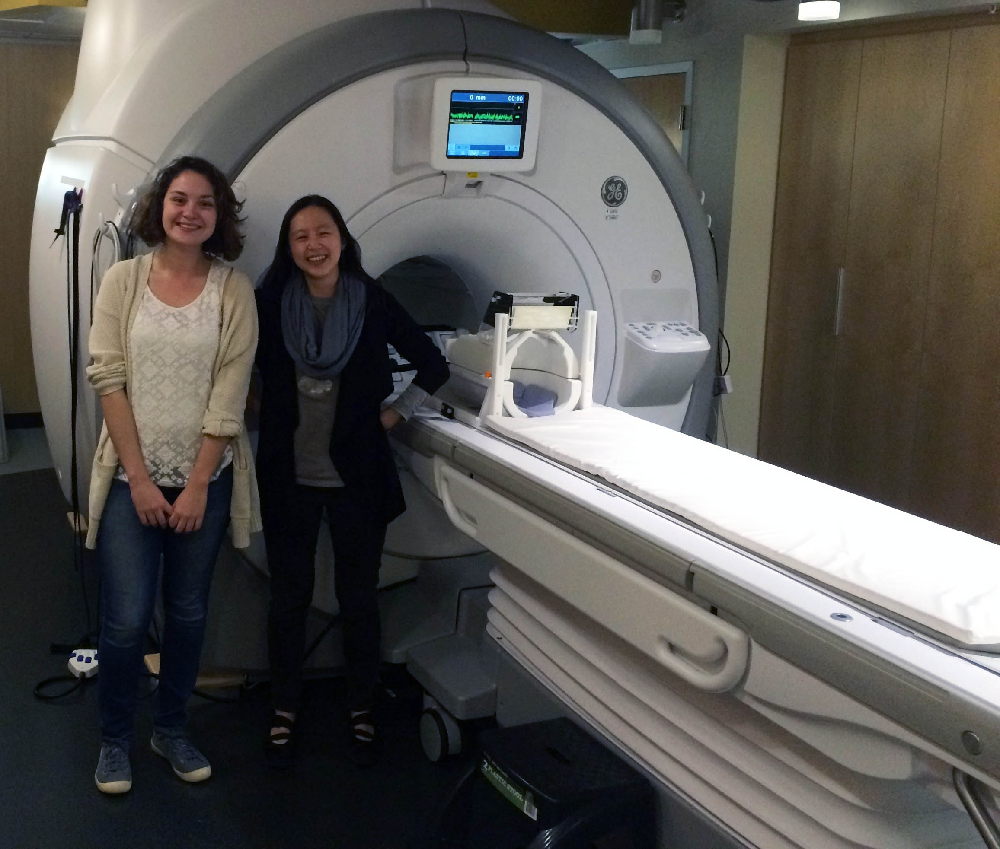2/5: The lab celebrates the night before CogSci deadline with Indian food and wine, and submits our first two papers. Thanks to our co-authors and friends who hung out with us!
January 2015
The lab welcomes Xuan, a visiting PhD student from Bertram Malle's lab at Brown.
September 2014
The lab has its inaugural lab meeting!
The lab welcomes Sophie, our new graduate student.
August 2014
Hyo is awarded the APA Dissertation Award, Division 7: Developmental Psychology. Congratulations, Hyo!
The lab welcomes Mika, our new lab manager, and Natalia, our new graduate student.
July 2014
The lab is born!